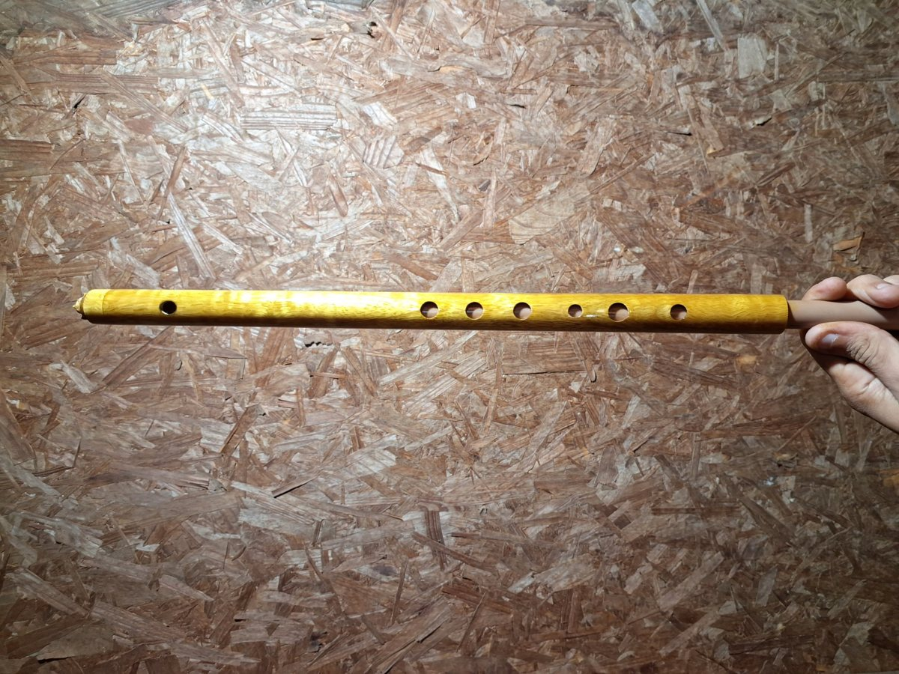
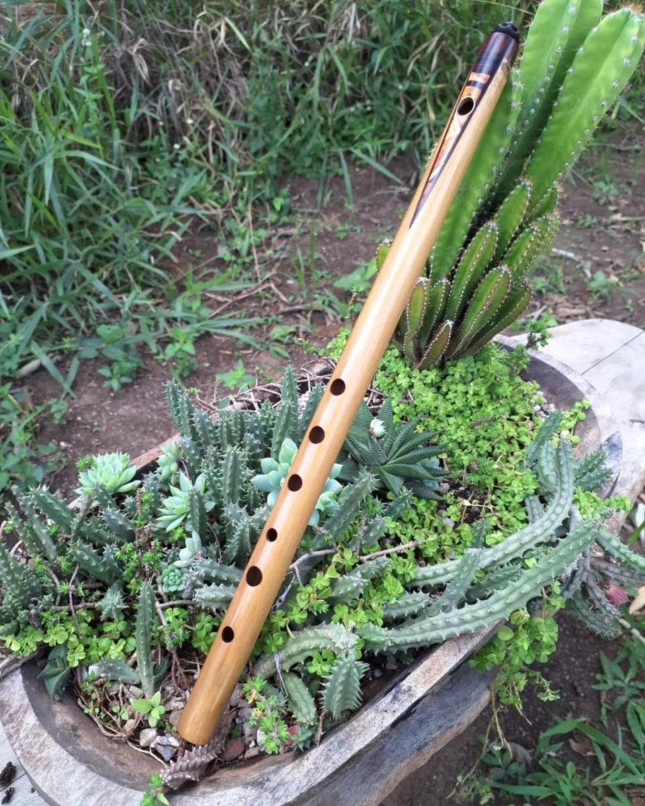
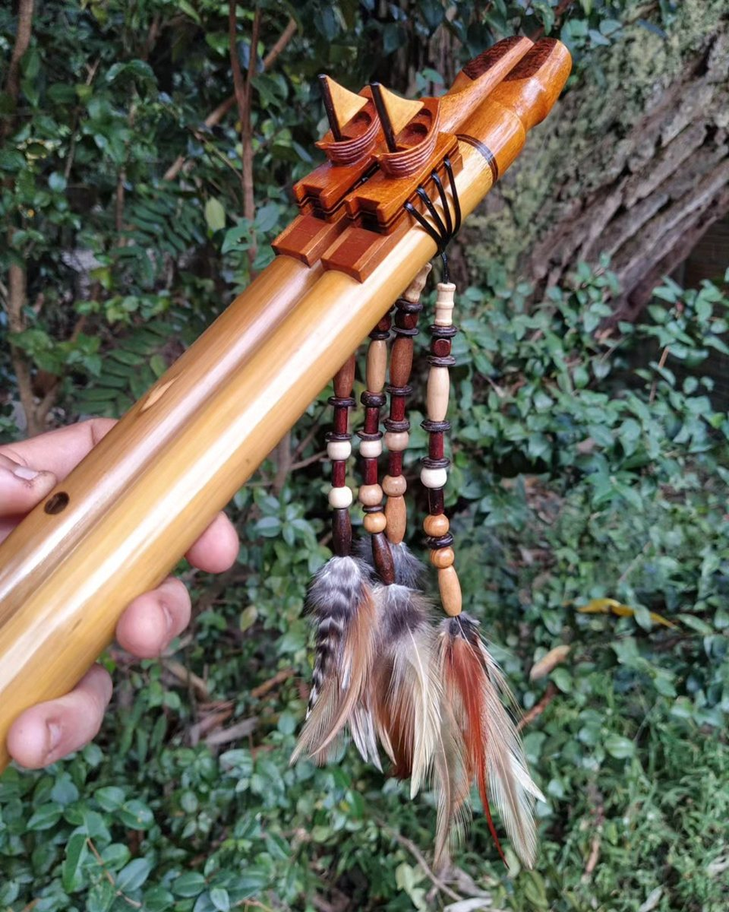
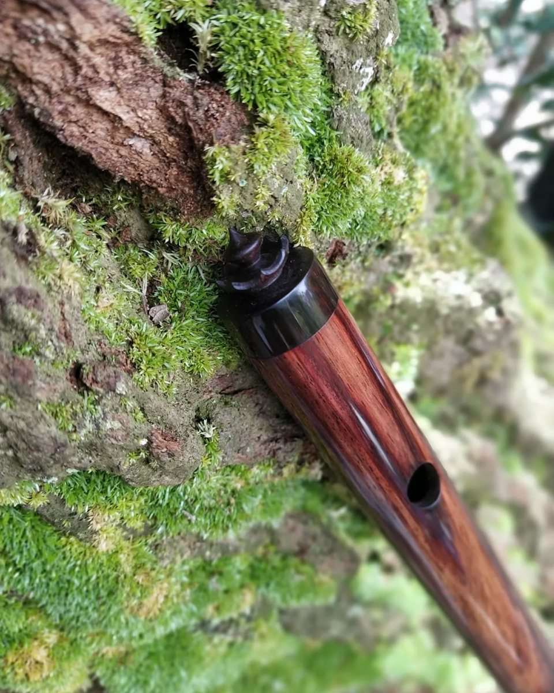

Igor Bastos · Luthier
Flautas feitas à mão, sob encomenda

Flauta de PVC
A partir de R$ 150
Prazo: 3 meses

Pífano
A partir de R$ 260
Prazo: 3 meses

Flauta nativa (NAF)
A partir de R$ 380
Prazo: 3 meses

Flauta irlandesa
A partir de R$ 2.100
Prazo: 3 meses
WhatsApp
Direct